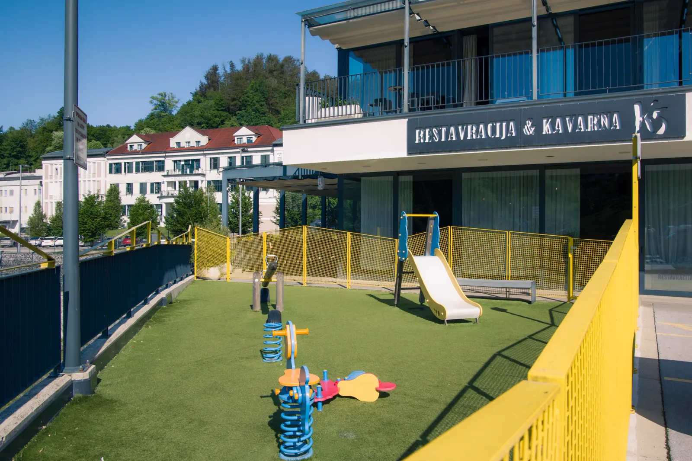
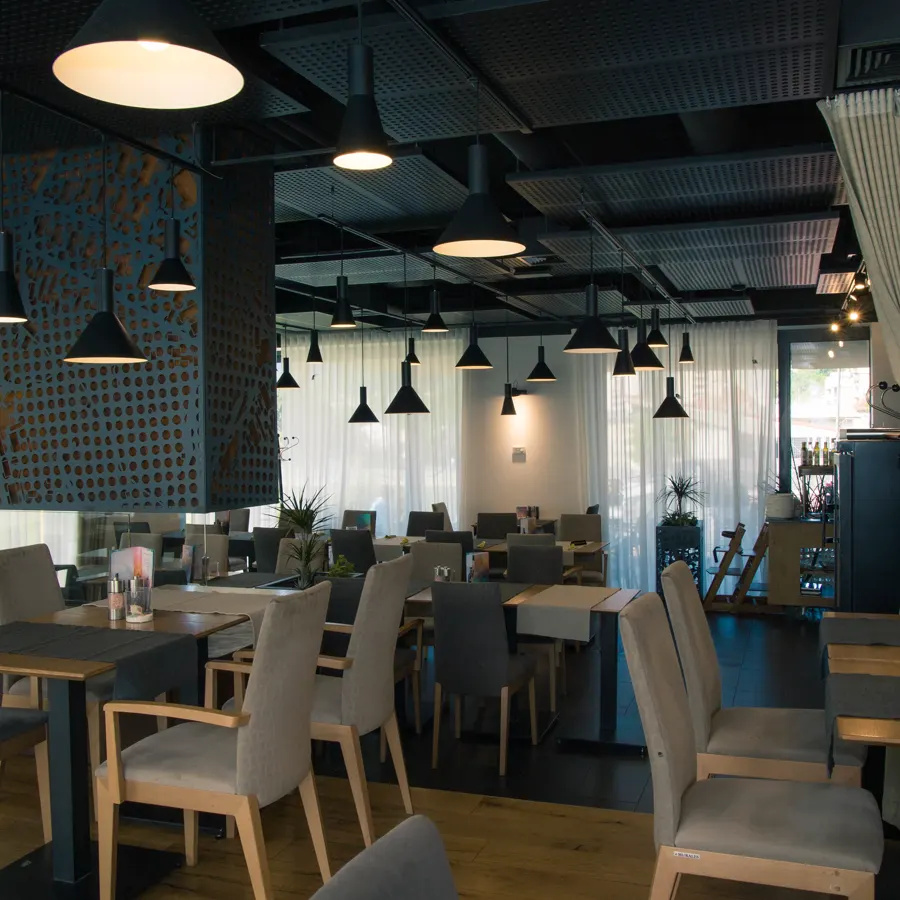
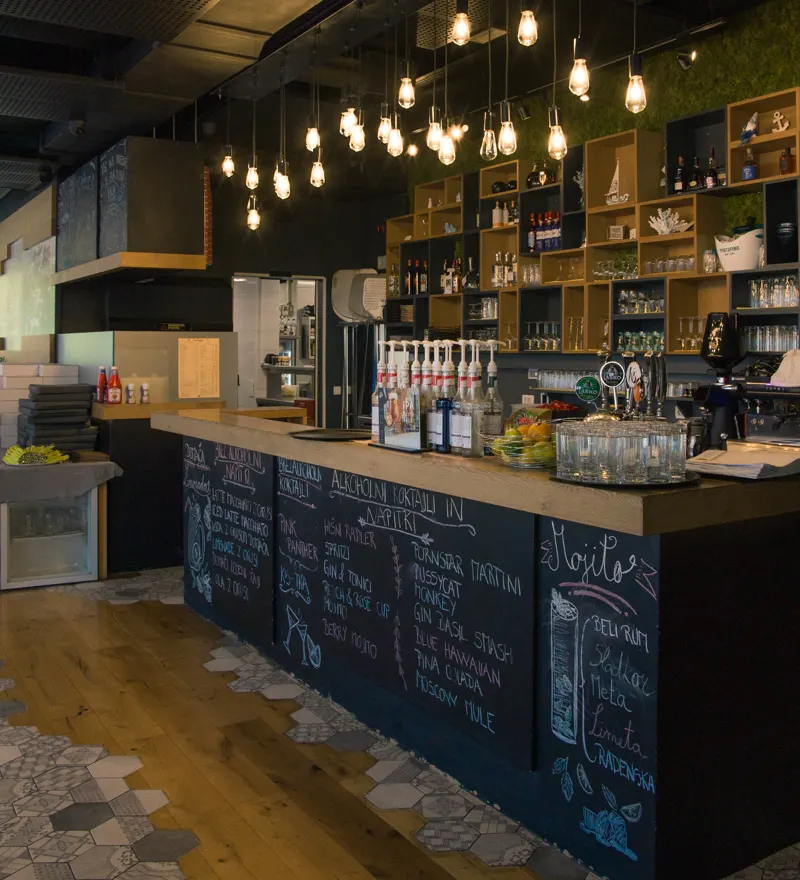

Zeleno sredi mesta.
Restavracija in kavarna K5 v Trbovljah: bujno zelenje na stenah, jedi, pripravljene sproti iz izbranih sestavin, in sladice lastne proizvodnje.


Malice 9.00 do 13.00ob delovnih dneh


Sladice lastne proizvodnjetorte, kremne rezine